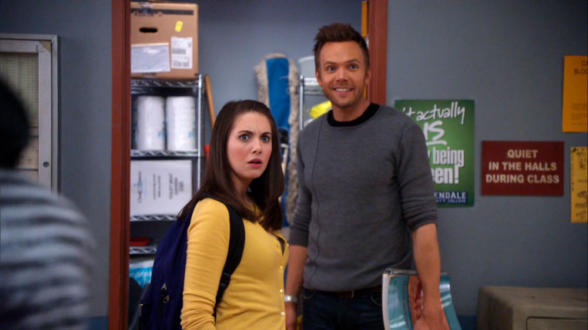

Inicio
Community es una serie de televisión de comedia estadounidense creada por Dan Harmon y emitida por NBC y Yahoo!, que trata sobre un grupo de estudiantes que asisten a un colegio universitario situado en la ciudad ficticia de Greendale, Colorado.
La serie se caracteriza por utilizar humor autoreferencial y por hacer continuas alusiones a la cultura popular, a menudo parodiando los clichés del cine y la televisión. La serie, producida por Universal Media Studios y Sony Pictures Television se estrenó el jueves 17 de septiembre de 2009. Además, fue lanzada en Facebook, por tiempo limitado. Desde entonces estuvo disponible en los servicios de vídeo en línea de Amazon, PlayStation 3 y en Hulu.
A lo largo de sus seis temporadas, Community se ganó un culto de seguidores gracias a su estilo narrativo innovador, episodios temáticos únicos y personajes entrañables como Jeff Winger, Abed Nadir y Annie Edison. La serie abordó géneros diversos como la ciencia ficción, el western, el cine noir y los musicales.
Origen
La serie empezó su transmisión el 17 de septiembre de 2009. El 5 de marzo de 2010, Community fue renovada por una segunda temporada. El 17 de marzo de 2011, NBC renueva Community para una tercera temporada, que fue estrenada el 22 de septiembre de 2011 y concluyó el 17 de mayo de 2012.
El creador y productor ejecutivo de la serie Dan Harmon fue reemplazado como Showrunner para la serie en la cuarta temporada, y los escritores David Guarascio y Moses Port (cocreadores de Aliens in America de corta duración) asumieron sus cargos. Sony Pictures Television, que produce la serie con Universal Television, inicialmente dijo que Harmon actuaría como productor de consultoría, pero Harmon afirmó que no estaba informado del acuerdo y que no regresaría en un puesto sin prerrogativas ejecutivas. El final de la tercera temporada también marcó varias otras salidas, incluidos los productores ejecutivos Goldman y Garrett Donovan, el escritor / productor Chris McKenna y el actor / escritor Dino Stamatopoulos. Los frecuentes directores de episodios y productores ejecutivos Anthony y Joe Russo también abandonaron el programa para dirigir Captain America: The Winter Soldier.
El 10 de mayo de 2013, la serie se renovó por quinta temporada. El 1 de junio del mismo año, Dan Harmon anunció que regresaría como showrunner, con el ex escritor Chris McKenna regresando como productor ejecutivo. El 10 de junio, Sony Television confirmó oficialmente el regreso de Harmon y McKenna para la quinta temporada. Dino Stamatopoulos, Rob Schrab y los Hermanos Russo también regresaron.
El 9 de mayo de 2014, NBC anunció que había cancelado Community. Durante varios años antes de su cancelación, los fanáticos adoptaron el lema "seis temporadas y una película", una línea del episodio "Paradigmas de la memoria humana" con respecto al mensaje esperanzador de Abed sobre la serie de corta duración The Cape de NBC. Las ofertas para continuar la serie fueron rechazadas por proveedores de transmisión populares como Netflix y Hulu.
El 30 de junio, el día en que expirarían los contratos del elenco, Yahoo! anunció que había ordenado la transmisión de una sexta temporada de 13 episodios en Yahoo! Screen, incluido el elenco principal junto con los productores ejecutivos Dan Harmon, Chris McKenna, Russ Krasnoff y Gary Foster. Harmon dijo: Estoy muy contento de que Community regrese para su sexta temporada predestinada en Yahoo ... Espero poder llevar nuestra querida comedia de NBC a un público más amplio al ponerla en línea.
El 4 de enero de 2016, Yahoo anunció que había cerrado su servicio Yahoo Screen, cancelando Community por última vez. Desde entonces, tanto Harmon como varios de los actores principales han expresado el deseo de finalizar la historia con una película.
Luego de una larga espera, el 30 de septiembre, la plataforma de streaming Peacock anuncio oficialmente que la comedia tendrá su largometraje. “Community: The Movie” estará desarrollada por Sony Pictures Television y Universal Television con Dan Harmon y Andrew Guest cumpliendo el rol de productores ejecutivos.
Elenco
Britta Perry
Britta Perry es una estudiante del Colegio Comunitario de Greendale. Nunca ha sabido realmente qué hacer en su vida, experimentado grandes problemas a lo largo de la misma. Britta abandonó la escuela porque pensó que impresionaría a Radiohead. Un día, Britta se despertó y se dio cuenta de que estaba casi en la treintena y arruinada, lo cual le incitó para inscribirse a Greendale y encontrar algo de rumbo en su vida.
Abed Nadir
Abed Nadir es un estudiante árabe interesado la cultura pop. Aspira convertirse en director y estudia Dirección Cinematográfica en Greendale. Su plan original era tomar clases de negocios para ayudar a administrar el restaurante de falafel de su padre, pero Britta lo convenció para que siguiera su sueño. Abed también posee muchos talentos ocultos que por lo general pasan por alto, como ser sorprendentemente atlético y coordinado.
Troy Barnes
Troy Barnes es un graduado de la Escuela Secundaria de Riverside que asiste al Colegio Comunitario de Greendale. En Riverside, Troy era un estudiante popular, siendo la estrella del equipo de fútbol y también el rey de la fiesta de graduación. Tuvo muchos admiradores en el instituto, incluyendo a Annie Edison, que también se unió a él en Greendale. Causó el interés de muchas universidades de élite, pero no pudo soportar la presión de las expectativas de los demás. Tras haberse auto-lesionado y no poder asistir a ninguna de ellas, recibió un folleto promocional de Greendale y decidió inscribirse.
Annie Edison
Annie Edisones una buena estudiante que obtuvo notas sobresalientes en la Escuela Secundaria de Riverside, donde asistió junto a Troy Barnes. Perdió su beca universitaria y abandonó el instituto debido a una adicción a las anfetaminas, que le indujo un ataque de nervios. Contra los deseos de su madre, optó por enfrentarse a su adicción. Su decisión de ir a rehabilitación en vez de ignorar el incidente causó que se distanciara de su familia, con la que terminó cortando todos los lazos excepto con su abuela. Empezó a asistir a Greendale a los 18 años.
Pierce Hawthorne
Piercinald Anastasia Pierce Hawthorneera un antiguo magnate que durante un tiempo ejerció como C.E.O.de Hawthorne Wipes, empresa fundada por su padre, quien le dio un estilo de vida libre de preocupaciones,sin embargo, cuando se hizo más mayor se encontró solo e infeliz en la vida. Por tanto, decidió regresar a la escuela con el fin de ampliar aún más sus horizontes y comenzó a asistir al Colegio Comunitario de Greendale en 1999.
Shirley Bennett
Shirley Anne Bennettes una mujer recientemente divorciada que asiste al Colegio Comunitario de Greendale para aprender a hacer negocios al margen de sus habilidades como pastelera. Antes de estudiar, estuvo casada y crió a dos hijos, Jordan y Elijah. Sin embargo, su marido Andre la dejó por una stripper. A pesar de sus dificultades, afirma que el hecho de que su marido le abandonara es lo mejor que pudo pesarla en la vida, ya que la asistencia a la universidad fue el primer paso para empezar a mejorarla.
Capítulos Destacados
Remedial Chaos Theory
El episodio que generó uno de los mejores gifs de todos los tiempos. Remedial Chaos Theory
ve a los siete miembros del grupo dirigirse al apartamento de Troy y Abed para una fiesta de inauguración. Una vez que llega la pizza, Jeff convence a todos de tirar un dado para ver quién tiene que bajar para recogerla.
Después de eso, el episodio se divide en siete líneas de tiempo diferentes, que muestran lo que habría sucedido si cada persona fuera a buscar la pizza. Los resultados son tan divertidos como diferentes.
Contemporary American Poultry
El alimento más popular de la universidad, alitas de pollo ha sido robado por un sistema corrupto de favoritismo. Para superar este "régimen", Abed formula un plan desde su conocimiento de películas de gángsters para que el grupo de estudio pueda recuperar lo que legítimamente les pertenece. Contemporary American Poultry canaliza elementos de películas de crimen americanas desde Goodfellas a El Padrino y American Gangster para crear un episodio que se diferencia de cualquier otro.
Conspiracy Theories and Interior Design
Jeff se ha anotado para un curso de estudio independiente con el “Profesor Professorson” sobre teorías de conspiración en Estados Unidos, para la desconfianza de Annie y del Decano. Cuando el "profesor" aparece, Jeff rápidamente admite que él no tiene idea de quién es el hombre y que descubrirá lo que realmente está pasando. Pronto las cosas empiezan a ser más complejas y se van fuera de control con la introducción de armas y una creciente lista de engaños.
Pillows and Blankets
A través del recurso del falso documental (parodiando The Civil War
de Ken Burns), Pillows and blankets
nos sumerge en la historia de la guerra de almohadas que tuvo lugar en la Universidad de Greendale. Troy y Abed se enzarzan en una pelea de grandes dimensiones que enfrentará a la universidad en dos bandos: “The Legit Republic of Blanketsburg” y “The United Forts of Pillowtown”.
Videos
La serie se caracteriza por su humor absurdista, autorreferencial y con frecuentes referencias a la cultura popular. A continuación, pueden ver algunos ejemplos del mismo:
Troy, Abed y Annie son atrapados en el acto al revisar una computadora ajena y deben idear un plan paraescaparse.
El grupo de estudio habla sobre las clases en las que van a anotarse en el próximo semestre.
Club Community
Completá tus datos para recibir novedades exclusivas y participar de sorteos.